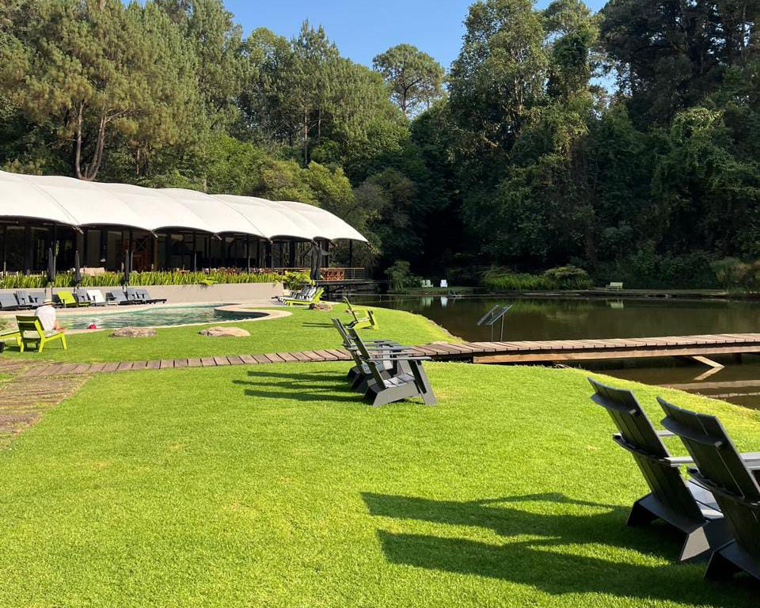

Atardecer en Valle de Bravo
Los atardeceres en Valle de Bravo es uno de los espectáculos naturales más hermosos de este Pueblo Mágico. El cielo se llena de tonos naranjas, rosas, rojos y morados, creando un paisaje lleno de color y belleza.
Mientras el sol se oculta detrás de las montañas, sus últimos rayos se reflejan sobre las aguas de la laguna. Las lanchas y los veleros que navegan tranquilamente hacen que la vista sea aún más especial.
Este momento transmite paz y tranquilidad, ideal para disfrutar con la familia o los amigos. El atardecer en Valle de Bravo es una experiencia inolvidable que permite apreciar la naturaleza y llevarse un hermoso recuerdo de este lugar.
Además, muchas personas aprovechan este momento para tomar fotografías, caminar por el malecón o sentarse a contemplar el paisaje. La brisa fresca y los colores del cielo crean un ambiente romántico y acogedor, convirtiendo el atardecer en una de las experiencias más especiales para quienes visitan Valle de Bravo.

Rodavento
Rodavento es un hotel y centro de aventura ubicado en un hermoso entorno natural de Valle de Bravo, rodeado de bosques, árboles y montañas. Se caracteriza por su ambiente tranquilo y sus instalaciones que permiten disfrutar de la naturaleza en un espacio cómodo y acogedor.
Este lugar ofrece diferentes actividades al aire libre, como paseos por el bosque, recorridos en kayak y experiencias de aventura. También cuenta con cabañas, áreas de descanso y espacios ideales para relajarse, disfrutar del paisaje y convivir con la familia o los amigos.
Rodavento es un destino perfecto para quienes buscan combinar descanso, naturaleza y diversión. Su belleza natural y sus actividades lo convierten en una opción atractiva para turistas que desean vivir una experiencia diferente y conocer otra de las maravillas de Valle de Bravo.

Piedra Negra
Piedra Negra es un lugar natural de Valle de Bravo que destaca por sus grandes formaciones rocosas y su hermoso entorno. Rodeado de vegetación y paisajes naturales, es un sitio ideal para disfrutar de la tranquilidad y admirar la belleza de la naturaleza.
Este lugar ofrece vistas panorámicas de los alrededores, donde se pueden observar árboles, montañas y parte del paisaje característico de la región. Sus rocas oscuras le dan una apariencia especial y lo convierten en un sitio interesante para explorar y tomar fotografías.
Visitar Piedra Negra permite alejarse del ruido de la ciudad y disfrutar del aire fresco y la aventura. Es un espacio atractivo para quienes disfrutan caminar, descubrir lugares naturales y conocer más sobre las maravillas que ofrece Valle de Bravo.